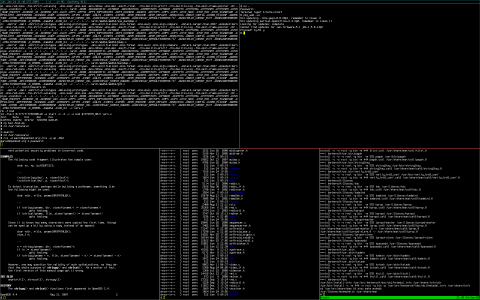
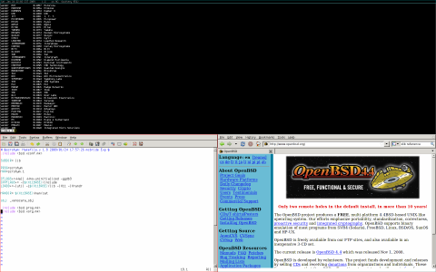
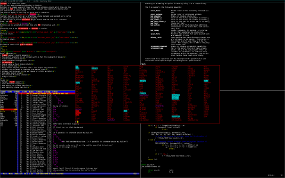
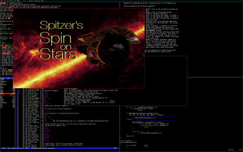

In English In Italiano Em Português In Russian
Torba es un manejador de ventanas super minimalista para X11. Intenta no superponer las ventanas para que las mismas puedan usarse de manera eficiente y para cosas mas importantes. Tiene configuraciones normales y no requiere que sepas un lenguaje de programacion para configurarlo. Esta escrito por hackers para hackers y apunta a ser pequeño, compacto y rápido.
Esta inspirado en xmonad y dwm. Los dos son buenos productos pero sufren de cosas como: sindrome-loco-inportable-lenguaje, cosas tontas por defecto, distribución de ventanas asimetricas , "Cuan dificil puede ser?". No obstante dwm tiene un fenomenal codigo y buenas ideas, el cual pedimos prestado. Por otro lado xmonad tiene muy buenas configuraciones por defecto, combinación de teclas y soporte para xinerama, pero es 'lisiado' ya que no esta escrito en C.
Torba es una perla hermosa!
Nada peor que perder el tiempo moviendo ventanas alrededor hasta encontrar
el tamaño perfecto o teniendo a penas una combinacion de teclas para una
tarea que nunca necesitamos.
La ruta a la agonia es muy larga para cuantificar y es la clasica moda
OpenBSD
(ponelo, o hackealo) un nuevo manejador de ventanas aparece para servir
con ningun otro proposito que obedecer a sus amos.
Fue escrito por Marco Peereboom, Ryan Thomas McBride y Darrin Chandler, el
mismo es lanzado bajo la
licencia ISC.
Los Parches serán aceptados tambien bajo la licencia ISC.
Acá hay algunos screenshots de torba en acción.

Apilado Horizontal.

Apilado Horizontal con gvim & Firefox.

Apilado Vertical con una ventana flotando en la ventana principal.

Mplayer, redimensionado y en movimiento.
Características importantes:
- xrandr dinamico y soporte para xinerama (multi screen).
- Navega donde quieras, en cualquier pantalla con el teclado o mouse.
- Barra de estado personalizable.
- Archivo de configuración para 'humanos'.
- Screenshots.
- Reiniciable sin necesidad de cerrarlo.
- Menu para ejecutar programas rápidamente.
- Muchas disposiciones de ventanas, gracias algunas combinación de teclas.
- Las ventanas pueden ser agregadas o borradas de la ventana principal.
- Las ventanas pueden ser movidas a otros workspaces o regiones.
- Redimensionar la ventana principal.
- Mover/Redimensionar las ventanas.
- arrastrar-para-que-flote una ventana.
- El usuario define las regiones.
- El usuario puede definir la combinación de teclas.
- El usuario puede definir los quirk bindings
- El usuario puede definir mapeo de teclas para lanzar aplicaciones.
Por hacer:
- agregar 'busquedas' para la función de ventanas.
- agregar 'identificador' para la función de ventanas.
- cambiar torba de Xlib a XCB.
- hacer que las ventanas flotantes recuerden su lugar cuando se re-dibuja la pantalla.
- hacer que el re-apilamiento funcione.
Bugs conocidos:
- Ninguno hasta el momento
Por favor leer el man para mas explicaciones.
All community resources are hosted by Conformal Systems and can be found at:
Copyright (c) 2009 Marco Peereboom <marco@peereboom.us>,
Ryan Thomas McBride <mcbride@countersiege.com> &
Darrin Chandler <dwchandler@stilyagin.com>
Mirrors:
Main site
Argentinian mirror
American mirror
$torba: torba_es.html,v 1.11 2010/09/16 02:42:21 marco Exp $
{kind=link}
{kind=link}
{kind=link}
{kind=link}